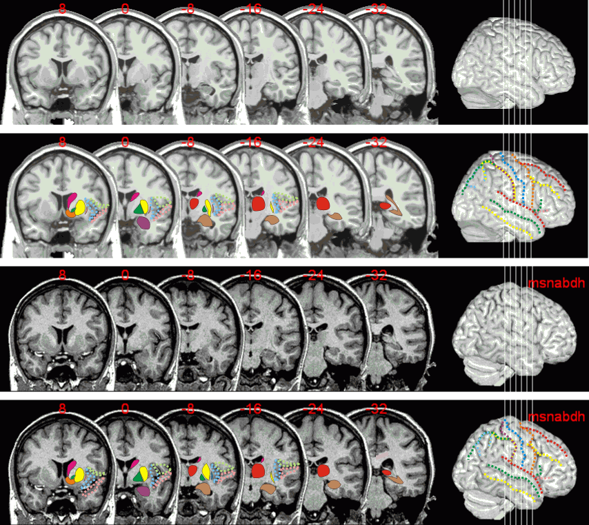

Atlas
Links
| Coronal views | Introduction Atlas Links |
Overview
As described in the introduction, coronal slices are excellent for identifying the hippocampus (you can see the folded shape of the hippocampus body, e.g. see the -8mm slices). Some landmarks to look for are:

Chris Rorden, 13 October 2002